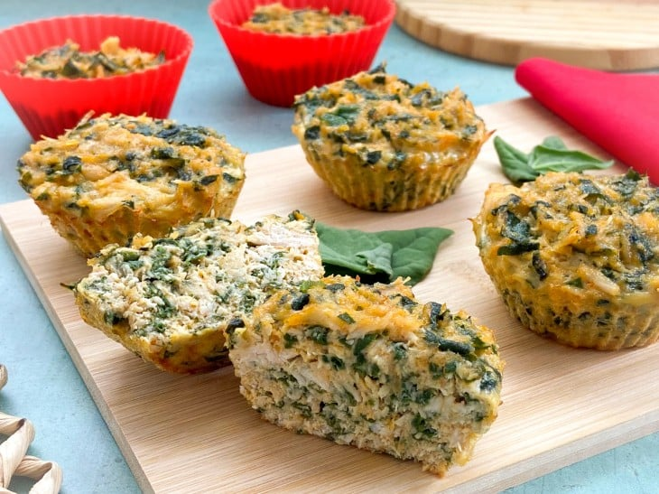

.png)
Comidas salgadas
- Salgado proteico low carb
Ingredientes
2 ovos
2 xícaras de chá de frango cozido, temperado e desfiado
1 xícara de chá espinafre refogado no azeite de oliva
1 colher de sopa de farelo de aveia
1 colher de sopa de requeijão
Sal a gosto
1 colher de chá de alho, cebola e salsa
1 colher de chá de páprica defumada
Modo de preparo:
1. Em um recipiente, bata os ovos rapidamente;
2. Adicione e misture o restante dos ingredientes, exceto os temperos;
3. Quando estiver homogêneo, tempere com sal, alho, cebola, salsa e páprica defumada;
4. Coloque porções da massa em forminhas de silicone e asse em forno preaquecido a 200°C por aproximadamente 20 minutos;
- Sanduíche de verão
Ingredientes
2 xícaras (chá) de ricota amassada
1 pote de Iorgurte natural integral
100 g de peito de peru defumado picado
2 colheres (sopa) de salsa
meia colher (chá) de sal
10 fatias de pão de forma integral
1 cenoura média ralada
1 xícara (chá) de agrião
Modo de preparo:
1. Em um recipiente, misture a ricota com o Iogurte, o peito de peru, a salsa e o sal.
2. Espalhe essa pasta em 5 fatias de pão integral, distribua a cenoura e o agrião.
Feche os sanduíches com as fatias de pão restantes e sirva a seguir.